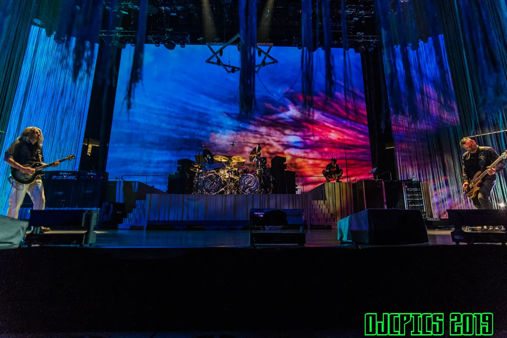

Tool is an American rock band from Los Angeles. Formed in 1990, the
group's line-up includes vocalist Maynard James Keenan, guitarist Adam
Jones and drummer Danny Carey. Justin Chancellor has been the band's
bassist since 1995, replacing their original bassist Paul D'Amour. Tool
has won four Grammy Awards, performed worldwide tours, and produced
albums topping the charts in several countries.

To date, the band has released five studio albums, one EP and one box
set. They emerged with a heavy metal sound on their first studio album,
Undertow (1993), and became a dominant act in the alternative metal
movement with the release of their follow-up album Ænima in 1996. Their
efforts to unify musical experimentation, visual arts, and a message of
personal evolution continued with Lateralus (2001) and 10,000 Days
(2006), gaining critical acclaim and international commercial success.
Their fifth studio album, Fear Inoculum, was released on August 30,
2019, to widespread critical acclaim. Prior to its release, the band had
sold more than 13 million albums in the US alone.

Due to Tool's incorporation of visual arts and very long and complex
releases, the band is generally described as a style-transcending act
and part of progressive rock, psychedelic rock, and art rock. The
relationship between the band and today's music industry is ambivalent,
at times marked by censorship, and the band's insistence on privacy.